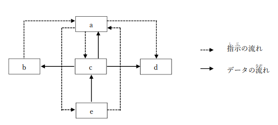

問題１
制御 装置に 関する 説明として、 適切なものはどれか。
ア．計算や 比較などの 各種かくしゅ 演算を 行う 装置である。
イ．コンピュータからデータを 出力する 装置である。
ウ．コンピュータにデータを 入力する 装置である。
エ．他の 装置に 対して 指示を 出だす 装置である。
制御 装置に 関する 説明として、 適切なものはどれか。
ア．計算や 比較などの 各種かくしゅ 演算を 行う 装置である。
イ．コンピュータからデータを 出力する 装置である。
ウ．コンピュータにデータを 入力する 装置である。
エ．他の 装置に 対して 指示を 出だす 装置である。
主記憶 装置と 補助 記憶 装置の 特性に 関する 組合せとして、 適切なものはどれか。
ア．
| 主記憶 装置 | 補助 記憶 装置 |
|---|---|
| 揮発性 | 揮発性 |
| 主記憶 装置 | 補助 記憶 装置 |
|---|---|
| 揮発性 | 不揮発性 |
| 主記憶 装置 | 補助 記憶 装置 |
|---|---|
| 不揮発性 | 揮発性 |
| 主記憶 装置 | 補助 記憶 装置 |
|---|---|
| 不揮発性 | 不揮発性 |
CPUを 構成する 装置の 組合せとして、 適切なものはどれか。
ア．演算 装置と 記憶 装置
イ．制御 装置と 演算 装置
ウ．制御 装置と 記憶 装置
エ．入力 装置と 出力 装置
SoC（SystemonaChip）の 説明として、 適切なものはどれか。
ア．3Dグラフィックスなどの 画像 処理を 専門に行うプロセッサである。
イ．CPU、メモリなどを 含む 主要 機能を 同一プロセスに 集積したものである。
ウ．CPUの 機能を 一つの 大規模 集積 回路にまとめたものである。
エ．複数のプロセッサコアを一つのパッケージにまとめたものである。
一般的な 命令の 取出し 手順を 表す 次の 図中のａ，ｂに 該当するレジスタ 名の 適切のものはどれか。
 ア| a | b | c | d | e |
|---|---|---|---|---|
| 記憶 装置 | 入力 装置 | 演算 装置 | 出力 装置 | 制御 装置 |
| a | b | c | d | e |
|---|---|---|---|---|
| 記憶 装置 | 入力 装置 | 制御 装置 | 出力 装置 | 演算 装置 |
| a | b | c | d | e |
|---|---|---|---|---|
| 制御 装置 | 出力 装置 | 演算 装置 | 入力 装置 | 記憶 装置 |
| a | b | c | d | e |
|---|---|---|---|---|
| 制御 装置 | 入力 装置 | 記憶 装置 | 出力 装置 | 演算 装置 |